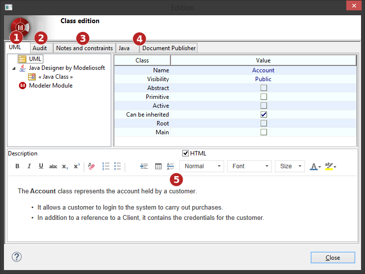
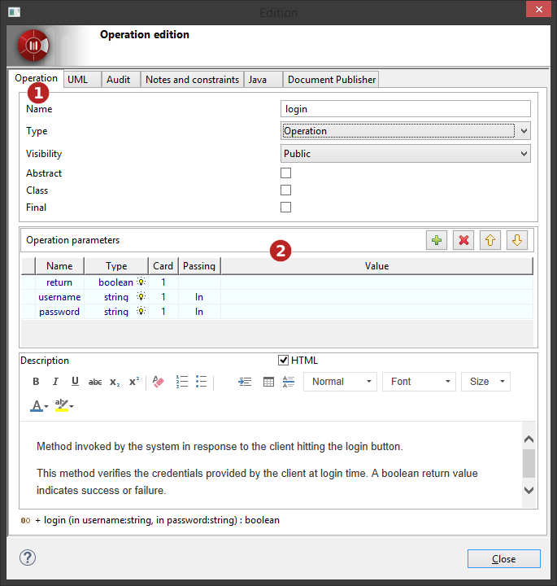

Editing elements using edition boxes¶
Elements can be edited through an edition box by double-cliking on them, or by using the ‘ Edit element…’ contextual menu command.

Generic edition box¶
Key:
- UML tab, similar to the Element view.
- Audit tab, similar to the Check model window.
- Notes and constraints tab, similar to the Notes and constraints view.
- Modules tabs for each relevant module.
- Quick “Description” note edition frame.
Noteworthy edition boxes¶
Some edition boxes are designed specifically for some elements:
Operations¶

Operation edition box¶
Key:
- Operation dedicated tab.
- Parameters management frame.
Use Case¶

Use Case edition box¶
Key:
- Use Case dedicated tab.
- Use Case specific notes tabs.